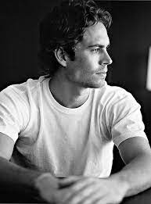

1973-2013
“If one day the speed kills me, do not cry because I was smiling.“
Paul William Walker IV[1] (September 12, 1973[2] – November 30, 2013) was an American actor. He was best known for his role as Brian O'Conner in the Fast & Furious franchise. Paul Walker began his career as a child actor in the 1980s, gaining recognition in the 1990s after appearing in the television soap opera The Young and the Restless; he received praise for his performances in the teen comedy She's All That and the comedy-drama Varsity Blues (both 1999), and saw international fame by starring in The Fast and the Furious (2001).